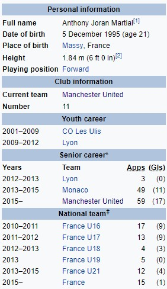

Антони Марсијал
Антони Хоран Марсијал (рођен 5. децембра 1995.) је француски професионални фудбалер који игра као офанзивни везни за енглески клуб Манчестер Јунајтед и репрезентацију Француске. Био је добитник награде Златни Дечко за 2015. годину за најбољег играча испод 21 године у Европи. [3] Играњем омладинског фудбала за Ле Ули, започео је своју професионалну каријеру у Лиону, а онда је 2013. године пребачен у АС Монако у износу од 6 милиона евра. Био је члан екипе Монака у две сезоне и потписао је за Манчестер Јунајтед у 2015. години за почетну накнаду од 36 милиона фунти што би могло порасти на 57,6 милиона фунти. Ово је највиша надокнада за тинејџера у фудбалској историји чак и прије потенцијалног повећања. Он је имао свој први меч за Јунајтед, и био је именован за Премијер играча месеца у свом првом месецу у енглеском фудбалу. Млади интернационалац за Француску са нивоа испод 16 на ниво испод 21, Мартиал је направио свој први деби у 2015. години. Именован је у њиховом саставу за УЕФА Еуро 2016.
